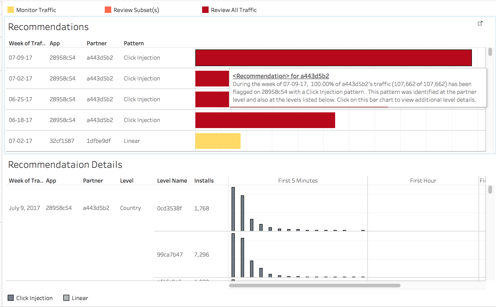
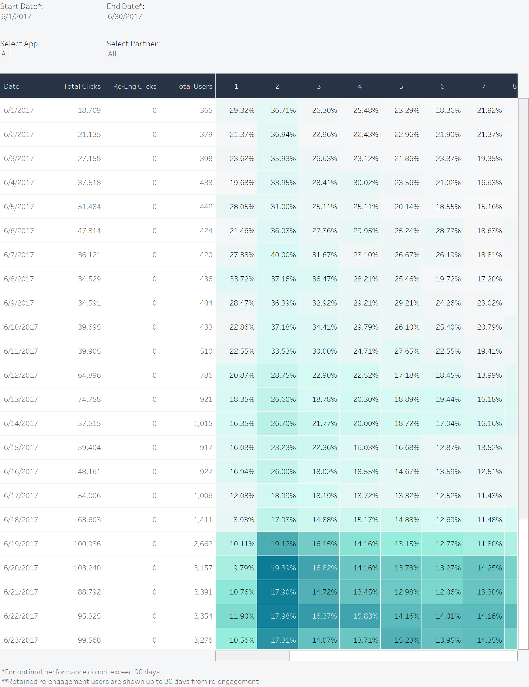
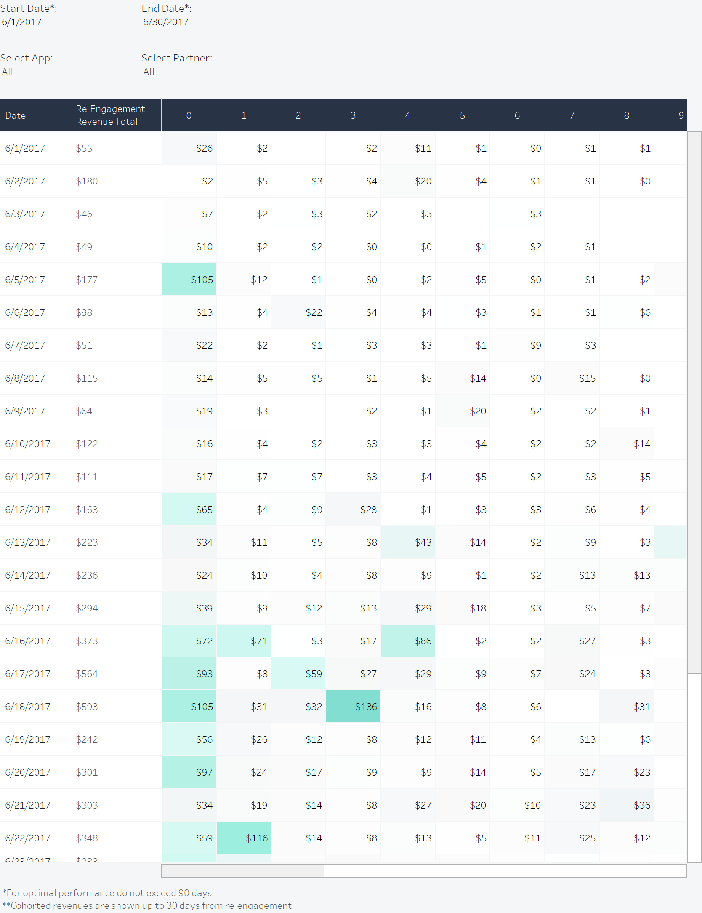
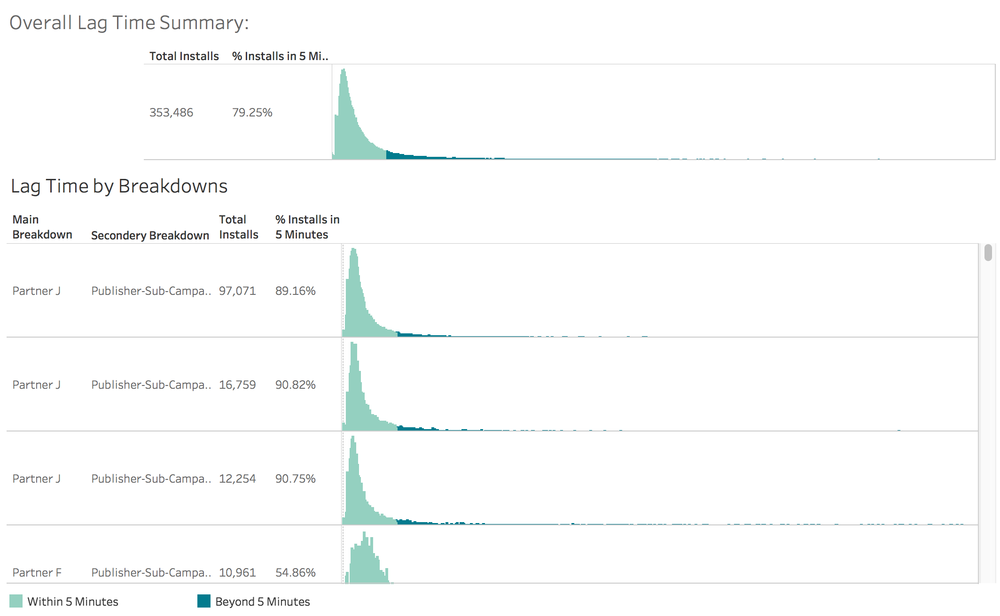

Reports and Dashboards
This part is all about reports and dashboards built by Tableau. Some of the underlying SQLs can be found on my github.
-
Recommendation System
This recommendation system is an essiential part of fraud reports. The dataset only includes traffic which is suspicious, such as having click injection or linear patterns. This system shows the amount of each pattern, where the traffic originated from, and digs to sub-levels such as countries, campaigns, sites, ect.
 View this report on Tableau Public
Check out the code on Github -
User Retention
User lifecycle is the important for moblile gaming apps. Getting people to download your app is the first step, What is more important is to engage, retain or even convert those users to paying users. Among all the components of user lifecycle, Retention is the most important metric for mobile gaming apps. There are different ways to calulate retention, and each of them servers different goals. Classic retention is the most commonly used retention type. Rolling retention also could be important if you want to see how many users are lost after certain amount of days after installation.
ALL DATA IN THE REPORT IS FROM ARTIFICAL DATASET, NO SENSITIVE INFORMATION INCLUDED
 View this report on Tableau Public
View this report on Tableau Public
-
Re-targeting Advertisering
Unlike typical banner ads, retargeting ads are a form of online advertisering which server users who already installed apps. Awareness and conversion are the two main goals of retargeting advertisering. There are two ways to measure the performance of retargeting channels based on the goal. For the awareness, the re-targeting retention is a good way to look at how many users come back to the app after they clicked the retargeting ads and which channel serverd them. For the conversion, the retergeting revenues reports shows how much revenues generated from retargeting ads during the retargeting window by different channels. Both reports allow you to compare with different channels and give a good idea which channle drives the most users or revenues.
  View this report on Tableau Public -
Traffic Quality
IVT(Invalid traffic) or ad fraud in moblile digital advertising is hurting the industry. And it is the time to fight back. Currently most of companies use a Cost model which is based on clicks or installations, then fraud also happens in that part. The amount of time from clicking an ad to installation of the app is a critial indicator of traffic quality. This report compares how long it takes for different channels to go from ad clicking to app installation.
 View this report on Tableau Public